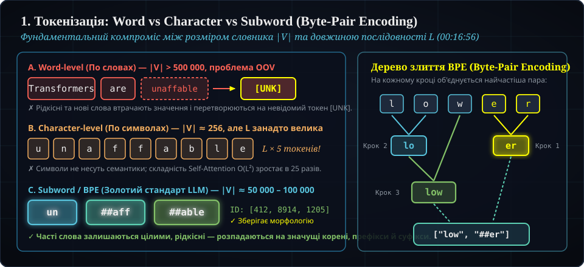
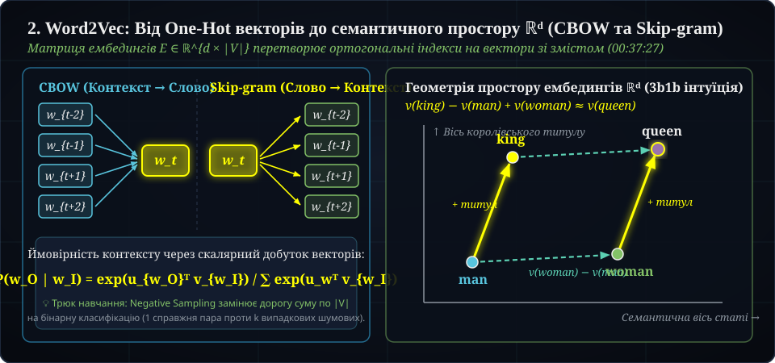
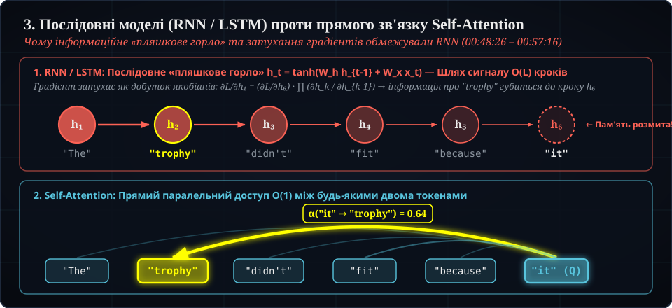
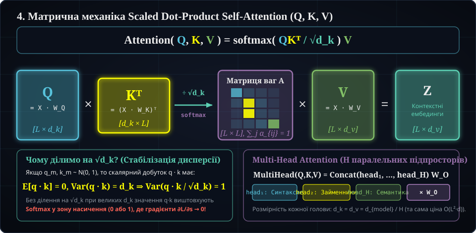
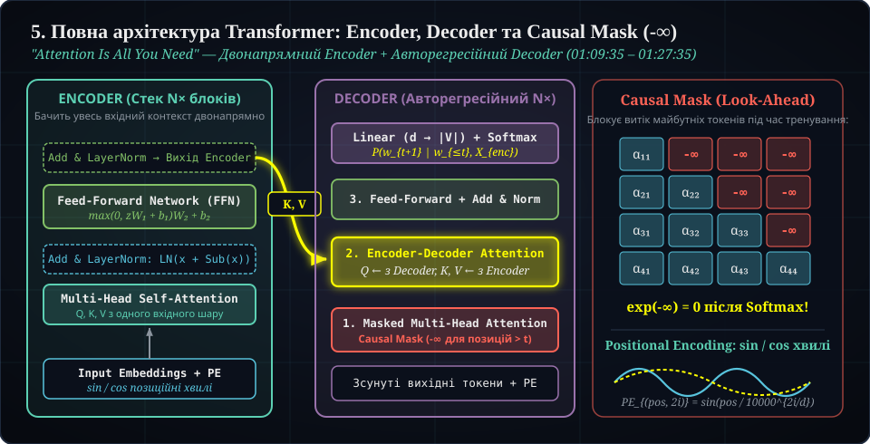

Інтерактивний візуальний підручник та конспект до лекції Stanford CME295: Transformers & LLMs — Lecture 1.
Нейронні мережі працюють із числами, тому першим етапом будь-якої LLM є перетворення тексту на послідовність цілих індексів токенів (t₁, t₂, …, tL) зі словника V.

| Підхід | Розмір словника |V| | Довжина послідовності L | Переваги | Недоліки |
|---|---|---|---|---|
| Word-level (по словах) | Дуже великий (> 500 000) | Коротка | Зберігає цілісне значення слів | Проблема OOV (Out-of-Vocabulary → [UNK]); різні форми слова (run, running) не мають спільного представлення |
| Character-level (по символах) | Дуже малий (≈ 256) | У 4–6 разів довша | Немає невідомих слів (OOV) | Окремі літери не несуть семантики; квадратична складність Attention O(L²) зростає у 25+ разів |
| Subword (BPE / WordPiece) | Оптимальний (32k – 128k) | Помірна | Часті слова — 1 токен; рідкісні розбиваються на значущі морфеми (un + ##aff + ##able); немає [UNK] |
Потребує попереднього тренування токенізатора на корпусі |
One-Hot вектори ei ∈ {0, 1}|V| є розрідженими та попарно ортогональними (скалярний добуток між будь-якими двома різними словами дорівнює нулю). Щоб закодувати семантичну близькість, ми проєктуємо їх у щільний простір ℜd (де d ≪ |V|) через матрицю ембедингів E ∈ ℜd × |V|:


У Self-Attention кожен токен послідовності одночасно виступає у трьох ролях за допомогою лінійних проєкцій Q = X WQ, K = X WK, V = X WV:


| Тип Attention у Transformer | Де знаходиться | Джерело Query (Q) | Джерело Key (K) та Value (V) | Causal Mask (-∞) |
|---|---|---|---|---|
| 1. Encoder Self-Attention | Encoder | Попередній шар Encoder | Попередній шар Encoder | Ні (двонапрямний контекст) |
| 2. Masked Decoder Self-Attention | Decoder (1-й підшар) | Попередній шар Decoder | Попередній шар Decoder | Так (бачить лише позиції ≤ t) |
| 3. Encoder–Decoder Cross-Attention | Decoder (2-й підшар) | З 1-го підшару Decoder | З фінального виходу Encoder | Ні (бачить усі слова вхідного речення) |
Вектори на виході залишаться абсолютно тими самими, лише переставляться місцями у тому ж порядку (властивість permutation equivariance). Без Positional Encoding механізм Self-Attention трактує вхід як невпорядковану множину векторів.
Декодер генерує переклад і формує запит Q ∈ ℜLdec × dk («яке слово оригіналу мені зараз потрібне?»). Енкодер тримає ключі K ∈ ℜLenc × dk та значення V ∈ ℜLenc × dv. Добуток (Q KT) V дає матрицю розміру Ldec × dv — рівно по одному контекстному вектору на кожен токен декодера.
Якби ми зануляли ваги після Softmax, сума ваг у рядку перестала б дорівнювати 1, а в знаменнику Softmax залишилися б експоненти майбутніх токенів (витік інформації з майбутнього). Додавання -∞ до логітів дає exp(-∞) = 0 і автоматично нормалізує суму дозволених ваг до 1.